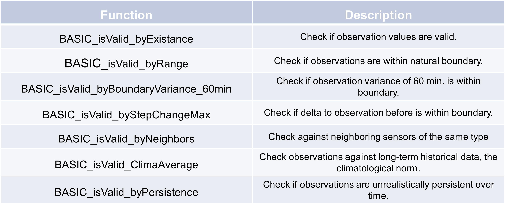

Observation reliability
Existance
This function is designed to check whether values in a given pandas series are valid based on their existence and whether they match a specified data type. It’s useful for basic anomaly detection in data cleaning processes. Here’s an example of how to use the ‘BASIC_byExistance’ function:
>>> s = pd.Series([np.nan, 60, 2.0, "string", 5.4, -999, None])
>>> TSCC.detection.BASIC_byExistance(s, -999, float)
0 1.0
1 1.0
2 0.0
3 1.0
4 0.0
5 1.0
6 1.0
dtype: float64
As expected only two values indicate no error, because the other values are no floats.
Boundary variance
This function is designed to check whether the variance of a time series, measured in hourly segments, is too low based on a specified threshold. It is particularly useful for identifying periods where there is little variation in the data, which could signal issues such as sensor malfunction or system inactivity in anomaly detection. Here’s an example of how to use the ‘BASIC_byBoundaryVariance_60min’ function:
>>> time_index = pd.date_range(start='2023-01-01 00:00', periods=5, freq='30T')
>>> s = pd.Series([0.05, 0.0, 0.1, 0.3, 0.25], index=time_index)
>>> TSCC.detection.BASIC_byBoundaryVariance_60min(s, 0.005)
2023-01-01 00:00:00 0.5
2023-01-01 00:30:00 0.5
2023-01-01 01:00:00 0.0
2023-01-01 01:30:00 0.0
2023-01-01 02:00:00 0.0
Freq: 30T, Name: belowMinVar, dtype: float64
As expected the first two values are below our chosen threshold. But in this case the threshold is relatively low, so you should adjust your threshold wisely given your series.
Step change
This function is designed to check whether the difference between consecutive values in a time series is too large, based on a specified maximum allowable difference. It also ensures that the time interval between consecutive values doesn’t exceed a given time step, which defaults to 30 minutes. Here’s an example of how to use the ‘BASIC_byStepChangeMax’ function:
>>> time_index = pd.date_range(start='2023-01-01 00:00', periods=5, freq='30T')
>>> s = pd.Series([0.05, 0.0, 3, 0.3, 0.25], index=time_index)
>>> TSCC.detection.BASIC_byStepChangeMax(s, 2, pd.Timedelta(minutes = 30))
2023-01-01 00:00:00 0.0
2023-01-01 00:30:00 0.0
2023-01-01 01:00:00 0.5
2023-01-01 01:30:00 0.5
2023-01-01 02:00:00 0.0
Freq: 30T, dtype: float64
As expected only the third and fourth value are above the given threshold and exceed the maximum difference.